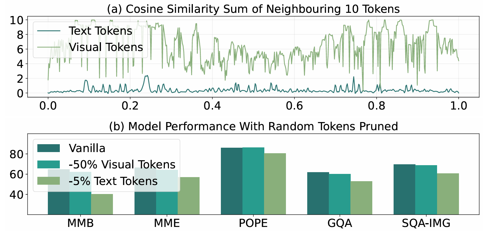
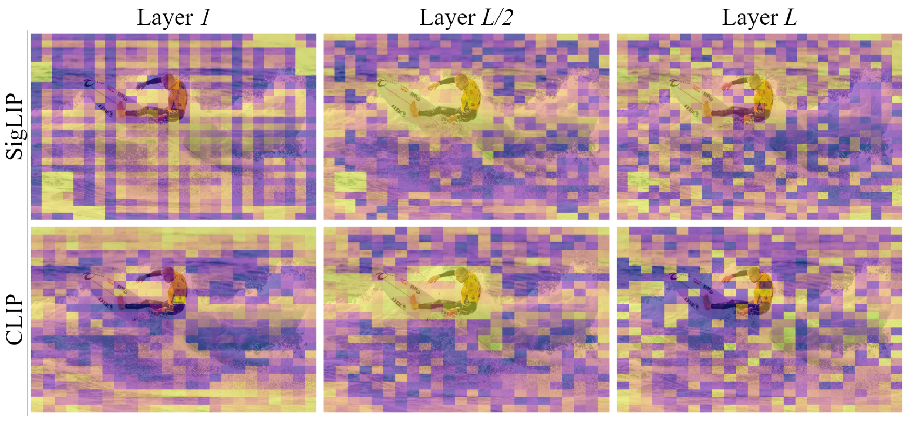
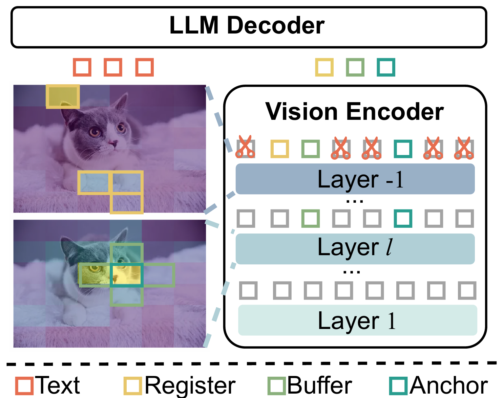
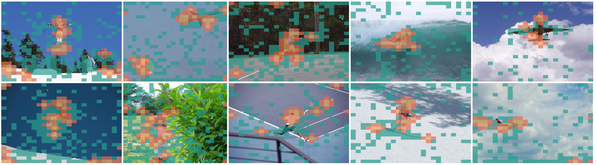
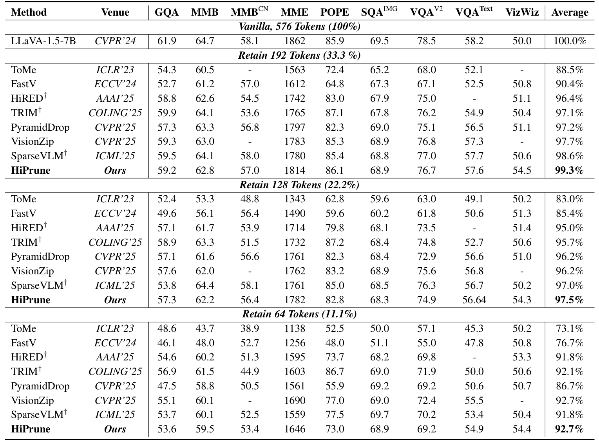
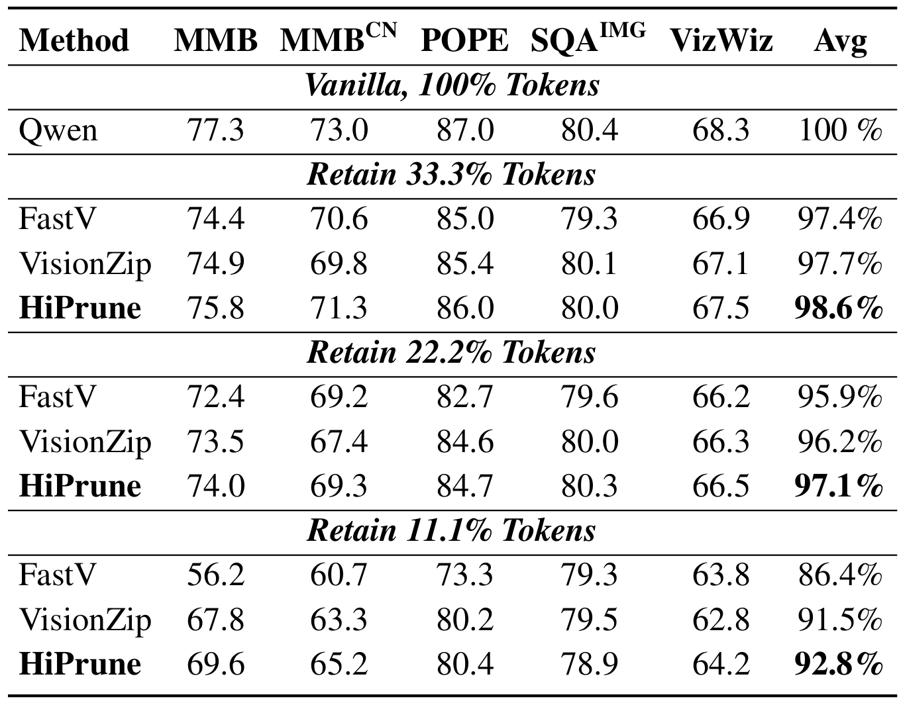

HiPrune: Hierarchical Attention for Efficient Token Pruning in Vision-Language Models
Authors: Jizhihui Liu*, Feiyi Du*, Guangdao Zhu*, Niu Lian, Jun Li, Bin Chen†, Weili Guan, Yaowei Wang
Venue: AAAI-26 (Student Abstract) Oral / (Submitted to ACL-26)
Vision-Language Models (VLMs) like LLaVA and Qwen have shown incredible capabilities in multimodal tasks. However, they come with a significant bottleneck: efficiency. VLMs encode images into extremely long sequences of visual tokens, leading to massive computational overhead and slow inference speeds.
But do we really need all those tokens?
In our recent paper, we demonstrate that visual tokens are highly redundant. To address this, we introduce HiPrune, a training-free, model-agnostic token pruning framework that dramatically accelerates VLM inference without sacrificing performance.

The Key Insight: Hierarchical Attention in Vision Encoders
Most previous pruning methods either require expensive retraining or rely on specific architecture features like the [CLS] token (which modern models like SigLIP lack).
Instead of looking at the LLM's cross-attention, we investigated the internal structure of the vision encoder itself. We discovered a universal hierarchical attention pattern across different ViT-based encoders (CLIP, SigLIP, DeiT, etc.):
- Shallow layers: Often retain low-level noise.
- Middle layers: Highly object-centric, naturally focusing on the semantic subjects of the image.
- Deep layers: Distribute attention uniformly to capture global context.

How HiPrune Works
Motivated by this hierarchical pattern, HiPrune selectively preserves a compact subset of tokens that collectively retain both fine-grained details and global information. It requires zero retraining and alters nothing about the original VLM structure.
We select three specific types of tokens:
- Anchor Tokens: Tokens with the highest attention scores in the middle layers (capturing main objects).
- Buffer Tokens: Tokens spatially adjacent to Anchors (preserving spatial continuity and mitigating attention noise).
- Register Tokens: Tokens with high attention in the deepest/output layer (providing global contextual summaries).

By combining these three components, HiPrune effectively covers the most critical parts of the image while discarding the redundant background.

State-of-the-Art Results
We evaluated HiPrune across various architectures, including LLaVA-1.5, LLaVA-NeXT (fixed-length), and Qwen2.5-VL (dynamic-resolution). The results show a state-of-the-art trade-off between accuracy and efficiency:
- LLaVA-1.5: Preserves 99.3% of original task performance while keeping only 33.3% of the visual tokens. Even at an extreme 11.1% token budget, it maintains 92.7% performance.
- LLaVA-NeXT: Actually boosts overall performance by 2.6% when using 22.2% of tokens, while reducing FLOPs by 6×. Maintains 99.5% accuracy with just 11.1% tokens.
- Efficiency: Reduces inference FLOPs and latency by up to 9$\times$.


Conclusion
HiPrune proves that you don't need complex merging algorithms or special tokens to compress visual information in VLMs. By simply leveraging the inherent layer-wise attention hierarchy already present inside vision encoders, we can achieve highly efficient, plug-and-play inference for universal Vision-Language Models.